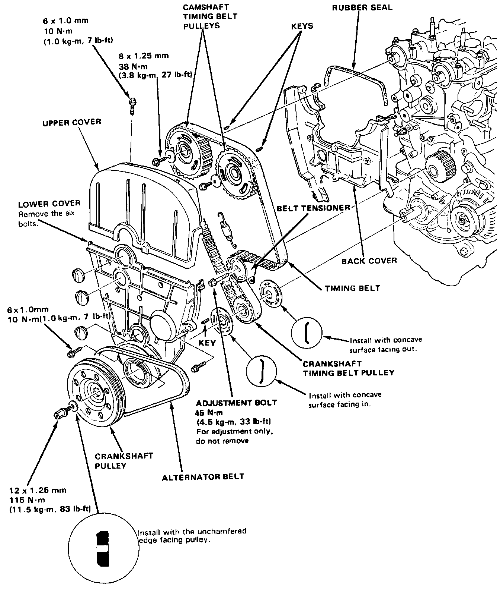
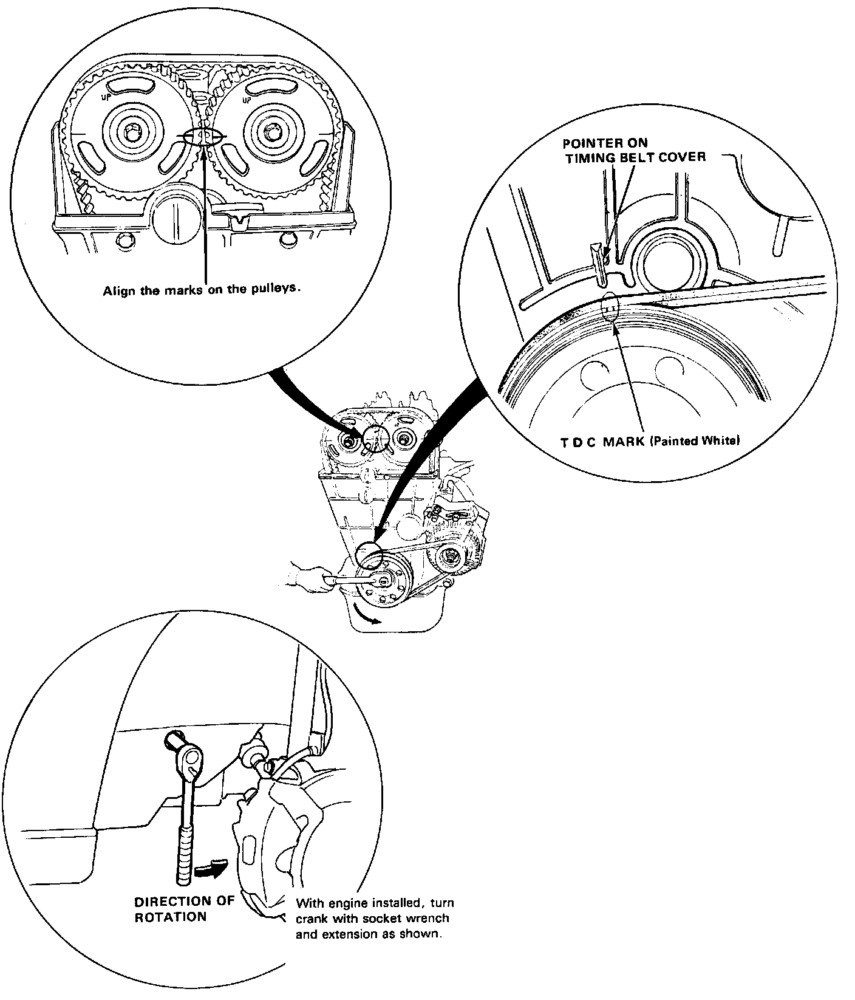
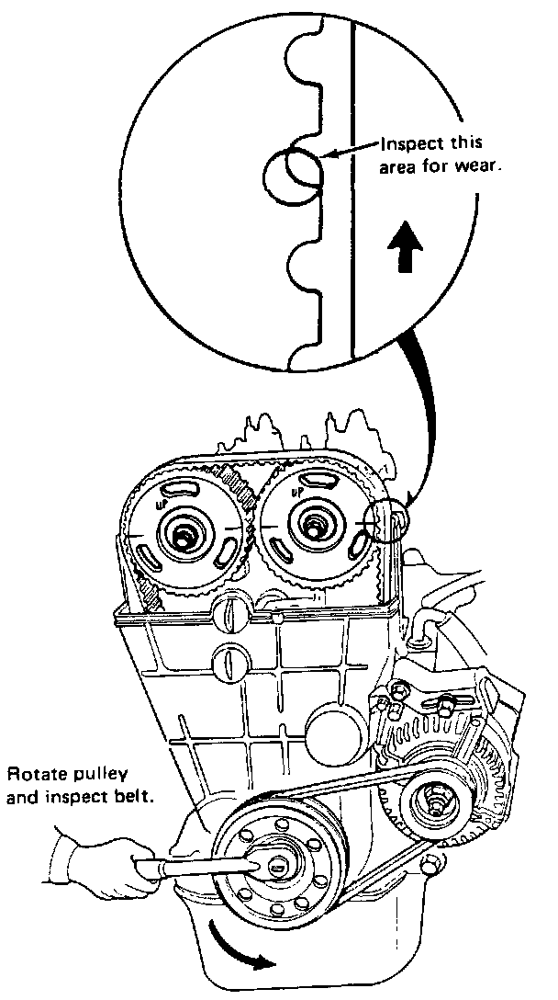
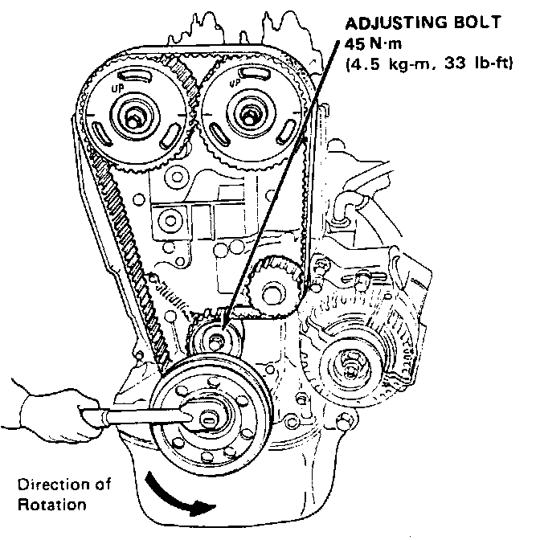

Timing Belt: Service and Repair
TIMING BELT / REPLACEMENT
1. Disconnect battery ground cable, then position No. 1 cylinder at TDC compression stroke.
2. Loosen alternator adjusting bracket and remove alternator belt.
3. Remove upper timing belt cover.
4. Loosen crankshaft front pulley bolt.
5. Support engine with stands and remove side motor mount.

6. Verify that timing marks are still aligned with cylinder No. 1 at TDC of compression stroke. Realign if necessary.
7. Remove crank shaft front pulley bolt and remove pulley and lower timing belt cover.
8. Loosen timing belt adjustment bolt and remove the belt.
NOTE: Do not bend or crimp timing belt more than 90° or to less than 1 inch in diameter.
9. If reusing old belt, mark direction of rotation on belt before removal.

10. Inspect belt for excessive wear or oil soaking and replace as necessary.
11. Install timing belt with cylinder No. 1 at TDC of compression stroke.
* Positioning The Crankshaft Before Installing Timing Belt
NOTE: Install the timing belt with the No.1 piston at TDC (Top Dead Center) on the compression stroke.
12. Adjust belt tension as follows:
CAUTION: Always adjust timing belt tension with the engine cold.
NOTE: Tensioner is spring-loaded to apply proper tension to the belt automatically after making the following adjustment:

a. Set the No.1 piston at TDC.
b. Loosen adjusting bolt.
c. Rotate crankshaft counterclockwise 3-teeth on camshaft pulley to create tension on timing belt.
d. Tighten adjusting bolt.
e. If pulley bolt broke loose while turning crank, re-torque it to 115 N.m (11.5 kg-m, 83 lb-ft).
NOTE: Put transmission in gear and set parking brake before retorquing pulley bolt.
13. Reassemble remaining components in reverse order of disassembly.